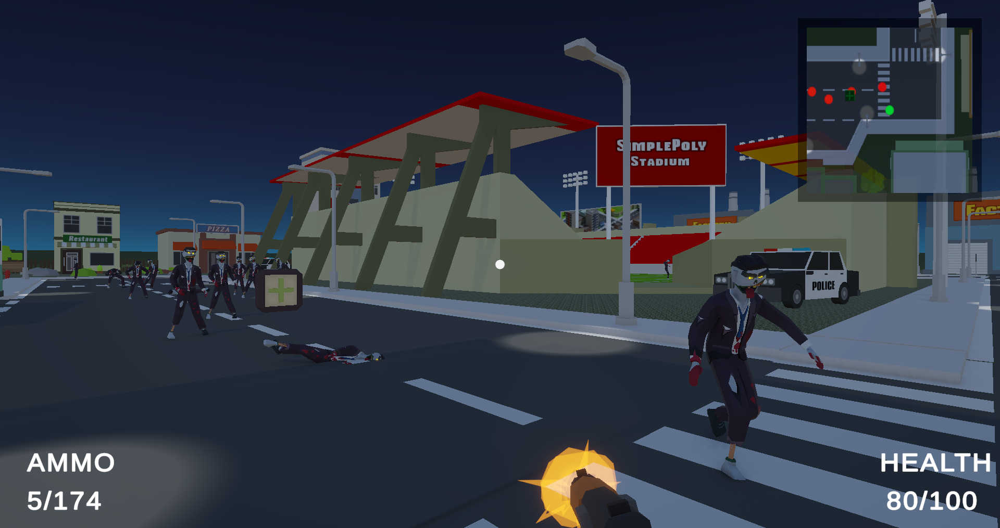

Unity C# Multiplayer: Netcode for GameObjects, Lobby & Relay
A first-person zombie shooter for up to four players. I built the session flow (Lobby and Relay), the networked player and combat systems, and the zombie AI.
UnityC#Netcode for GameObjectsLobbyRelay

Overview
Players spawn into a town, find weapons and survive zombies that hunt the nearest player. Single-player runs as a local host, and multiplayer goes through a lobby browser with Relay, so no port-forwarding is needed. A lobby setting switches between Survival and Turned, where dead players respawn as zombies.
Three join paths (Quick Join, lobby code, lobby list) sharing one Relay connection flow
Up to 4 players, with join approval and late-join rejection
Server-owned game state, health, ammo and pause, with owner-driven movement and input
Four zombie behaviors: chase, roam, investigate gunshots, and seek the closest player after idling
Creating or joining a lobby has to chain four services in order (Lobby, Relay, transport, Netcode) and recover when any step fails. ZombieGameLobby owns that chain and ZombieGameMultiplayer owns the Netcode session.
Create — The host creates the lobby, allocates Relay for one fewer than the max players, stores the Relay join code in lobby data visible only to members, configures the transport and starts the host.
Three Join Paths — Quick Join, join by code and join by lobby ID all read the join code from lobby data, join the Relay allocation, set client relay data and start the client. Failures raise events that a message UI listens to.
Keeping Lobbies Alive — A 15-second heartbeat keeps the host's lobby alive, a 1.1-second poll keeps lobby data current, and the lobby browser refreshes on its own timer. Each async call has an in-flight guard so requests never stack.
Failure Handling — Three consecutive failed polls count as a lost lobby, which shuts down the session and notifies the UI. Joins with a missing or empty join code fail cleanly.
Join Approval — The Netcode approval callback rejects joins once the game has left the character-select scene, or when the lobby is full, with a reason shown to the player. The lobby is locked when the match starts and unlocked at game over.
Shared Player Data — A NetworkList<PlayerData> holds client ID, name, model, kills and deaths. Clients ask the server to change their entry through Server RPCs, and the scoreboard and character-select UI refresh from the list-changed event.
joinedLobby = await LobbyService.Instance.CreateLobbyAsync(lobbyName, MAX_PLAYER_AMOUNT, options);
Allocation allocation = await AllocateRelayAsync();
string joinCode = await GetRelayJoinCodeAsync(allocation);
await LobbyService.Instance.UpdateLobbyAsync(joinedLobby.Id, new UpdateLobbyOptions
{
Data = new Dictionary<string, DataObject>
{
{ KEY_RELAY_JOIN_CODE, new DataObject(DataObject.VisibilityOptions.Member, joinCode) }
}
});
transport.SetHostRelayData(server.IpV4, (ushort)server.Port,
allocation.AllocationIdBytes, allocation.Key, allocation.ConnectionData);
ZombieGameMultiplayer.Instance.StartHost();
// Connection approval: one callback decides who gets in
if (SceneManager.GetActiveScene().name != Loader.Scene.CharacterSelectScene.ToString())
{ response.Approved = false; response.Reason = "Game in progress"; return; }
if (NetworkManager.Singleton.ConnectedClientsIds.Count >= MAX_PLAYER_AMOUNT)
{ response.Approved = false; response.Reason = "Server full"; return; }
Relay removes port-forwarding, which is the biggest barrier in player-hosted games. Putting the join code in member-only lobby data means only players who joined the lobby can read it.
2. Player Systems: Ownership, Movement & Death
Every player object exists on every client, so each system checks IsOwner before reading input or touching the camera.
Owner-Only Camera and Input — The camera, audio listener and minimap camera are only enabled for the owning client. Mouse look, cursor locking and key handling all run behind the owner check.
Owner-Written State — Rotation and walk and run flags are NetworkVariables the owner writes, with an angle threshold so rotation only syncs on real change. Other clients drive animation from the change callbacks.
Movement — Rigidbody movement with ground drag, slope projection and a two-raycast stair-step check that lifts the player only when the lower ray hits and the upper ray is clear.
Death and Respawn — The server drops the weapon, disables controls on every client with an RPC and shrinks the collider so the body lies flat. The owner's camera lifts to a top-down view. A coroutine then respawns the player in Survival or spawns a zombie player in Turned.
Late-Join Safety — A death check on the first health change makes a player who joins mid-match see already-dead characters correctly.
Owner-driven movement keeps controls responsive with no round trip. Anything that affects other players, such as health, ammo, death and the match result, is written by the server.
3. Gameplay Systems: Combat, Ammo & Zombie AI
Shooting is a client-side raycast, and the server applies damage and owns ammo. Zombies are simulated only on the server.
Shooting — The client aims a raycast from the camera, retargets it from the weapon muzzle, and sends the hit point and target NetworkObjectId to the server. The server resolves the object, checks it is alive, applies damage with the shooter's client ID for kill credit, and tells other clients to play effects.
Ammo and Reload — Magazine, reserve and reloading state are server-written NetworkVariables. A reload shows the cached ammo count locally until the animation ends. If the server rejects the reload, the client rolls its UI back.
Zombie Chase — Re-evaluates the closest living player every 0.25 s using a non-allocating overlap sphere. Neighbor separation keeps zombies from stacking, and a blocked zombie waits and then sidesteps.
Seek After Idle — After 10 s without a target, a zombie searches globally for the nearest living player and validates the NavMesh path before moving, so it never heads for an unreachable player. Targets refresh while it travels.
Investigating Gunshots — A shot alerts zombies through a server-written NetworkVariable, with a random cooldown so every zombie does not react to every shot.
Turned Mode — Dead players respawn as zombie players, and a server-owned counter ends the match when every player has turned.
// Client: raycast, then ask the server to apply it
RequestShotServerRpc(origin, direction, hit.point, hit.normal, hitNetworkObjectId);
[Rpc(SendTo.Server)]
private void RequestShotServerRpc(Vector3 origin, Vector3 direction, Vector3 hitPoint,
Vector3 hitNormal, ulong hitNetworkObjectId, RpcParams rpcParams = default)
{
if (NetworkManager.Singleton.SpawnManager.SpawnedObjects
.TryGetValue(hitNetworkObjectId, out NetworkObject hitNetObj))
{
var health = hitNetObj.GetComponent<HaveHealth>();
if (health != null && !health.IsDead)
health.TakeDamage(damage, rpcParams.Receive.SenderClientId);
}
SpawnMuzzleFlashClientRpc();
}
// Zombie: only head for a player the NavMesh can actually reach
if (!NavMesh.CalculatePath(transform.position, targetPos, NavMesh.AllAreas, path)
|| path.status != NavMeshPathStatus.PathComplete)
{ _currentTarget = null; return; }
Client-side hit detection keeps shooting responsive, and server-side damage means clients can never edit health or ammo. Running zombie AI only on the server keeps every client's zombies consistent.
4. Supporting Systems
Pause — Each client's pause request goes to the server, which pauses the game for everyone while any player is paused.
Audio — A singleton SoundFXManager spawns 3D audio sources on demand with random clip variation, and SoundMixerManager converts slider values to decibels with Log10 so volume feels even.
HUD and Menus — Health, ammo, minimap, scoreboard, lobby settings and pause UI react to events and NetworkVariable changes and only render for the owning player.
Notes
Results
Complete flow: main menu, lobby browser, character select, match, game over, back to character select
Three lobby join paths and two game modes (Survival, Turned)
Four zombie behaviors running server-side
What I’d improve next
Merge the three duplicated join methods into one shared connect flow.
Validate shots on the server (range and line of sight) instead of trusting the client's hit.